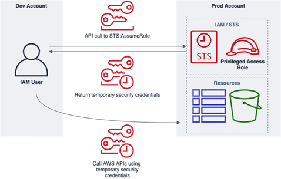

Access keys
What are access keys?
AWS access keys are long-term credentials for Identity and Access Management (IAM) users. Access keys consist of an ID and a secret and provide programmatic access. Access keys can be used to sign programmatic requests to the AWS Command Line Interface (CLI) or AWS Application Programming Interface (API).
Back to side navigationThe importance of rotating access keys
The importance of Amazon Web Services (AWS) access keys and rotation of them can be seen through their inclusion in the AWS top 10 security items to improve in your AWS account and CIS AWS Foundation Benchmark. The Public Cloud Team encourage the use of more secure and robust access key policy for the Home Office to educate users, application, and platform teams of best practice and to encourage good behaviours.
Back to side navigationHow to rotate access keys
To rotate your access keys, you need to login to the Identity account using your
normal credentials. AWS have produced step-by-step guidance for rotating access keys using the Console,
the CLI and the API to rotate any user access keys.
If you do not have the correct permissions, you
can view our guidance on how to a raise request with the
Public Cloud Team and request permissions.
Access keys in the Home Office
The Public Cloud Team (PCT) team inherited the management of AWS IAM from ACP. As of January 2021, there was still 71 users with AWS Access Keys older than the approved 90-day limit and another 71 users who have not logged in for over 90 days. There were also another 28 users who did not have Multi Factor Authentication MFA enabled.
This was a risk to the Home Office as we were not proactively managing inactive accounts or keys older than the recommended 90 days old, providing a greater window of opportunity for a threat actor if an AWS Access Key was to be compromised, through being lost, cracked or stolen.
To address this the Public Cloud Team are planning to deploy a Lambda to perform 2 functions:
- Delete any access keys older than 90 days old for any user
- Move users who have not logged in to the AWS Central/Login accounts for more than 90 days into the disabled user's group in AWS
Risks
- Static credentials pose a security and compliance risk as it means they can be used on an ongoing basis if they have been lost, stolen, cracked, or published to a public repository. At present access keys are used by both users and applications/services.
- One of the main risks is if an access key is lost, published, cracked or stolen it provides a window of opportunity for someone to use the keys. Rotating the keys aims to make this window of opportunity smaller and stops ongoing access .
- AWS recommend the use of temporary access keys through the use of the Security Token Service instead of using long term access keys .
Policy
The PCT are looking at implementing the following policy for access keys, to reduce the risks to the Home Office. We will not force business areas to comply with the policy. The policy will allow us to highlight where there are potential risks in the organisation.
- AWS access keys should not be used where there is a valid alternative available using temporary access keys
- AWS access keys must only be created where there is a clear requirement for programmatic access
- AWS access keys must be rotated at least every 90 days, if not more often , either through the AWS Console, Command Line Interface (CLI), or Application Programming Interface (API)
- Individual AWS access keys must not be shared internally or externally with any other user or organisation, that is not the intended recipient of the access key
- AWS access keys must be securely stored and approved as part of a service's security assurance
- AWS access keys must not be embedded directly into code or repositories, tools provided by the AWS SDK and command line tools (e.g. AWS credentials file) should be used instead. Further documentation for using temporary
- In the event an AWS access key is published to the internet (e.g. GitHub), shared or lost you should follow the relevant incident management process and notify public.cloud@homeoffice.gov.uk immediately. The access key should also be made inactive and deleted.
- Permissions for individual users, services or applications using AWS access keys should be limited, based on least privilege and regularly reviewed (administrative permissions should be given as a last resort)
- Multi Factor Authentication (MFA) must be enabled for any individual IAM user that has programmatic access and AWS access keys provided to them
Temporary access keys
At present the use of AWS access keys provide high levels of access with long lived credentials. However, in most cases long lived credentials are not required, and the access requirements can be fulfilled using short-lived temporary security credentials.
Temporary security credentials are generated using the Security Token Service through the assumption of IAM roles. Along with an access key ID and secret access key, a security token is also created that indicates when the credentials expire. An example of the flow is provided below.
The primary benefit of temporary access keys provided by STS is that it limits the potential blast radius of any security incident, as the credentials provided are short lived. This means if they are accidently shared, published or stolen they will soon time out without user intervention. Where it is required though temporary security credentials can be revoked as detailed. How to revoke IAM role temporary security credentials
Back to side navigationAmazon EC2
Where an application or AWS CLI script is running on an EC2 instance do not use access keys directly in the application. Instead define an IAM role that has the appropriate permissions for your application and attach it to the EC2 instance to be used. For applications using the AWS SDKs and CLI temporary credentials are retrieved from the role automatically. IAM roles for EC2.
Back to side navigationAWS Lambda
Each Lambda function has an execution role created in IAM that provides the function with the necessary permissions to run. When using the AWS SDKs, the temporary credentials are automatically retrieved from the execution role. Long lived AWS access keys should not be used at all when using Lambda including providing them via the environmental variables. AWS Lambda execution role.
Back to side navigationIAM USERS
The majority of IAM users do not require access keys that provide them with high levels of permissions, or multiple access keys to access multiple AWS accounts. Instead following best practice IAM users should be provided with a single AWS access key that provides a minimal level of access, this reduces the blast radius of long-lived access keys being published to the internet, shared or stolen as they will have restricted access. When users require privileged access, they should assume a role which will grant them temporary credentials as per figure 1. This can be used both within the same account that the IAM user exists in and to provide cross account access.
Back to side navigationBack to top